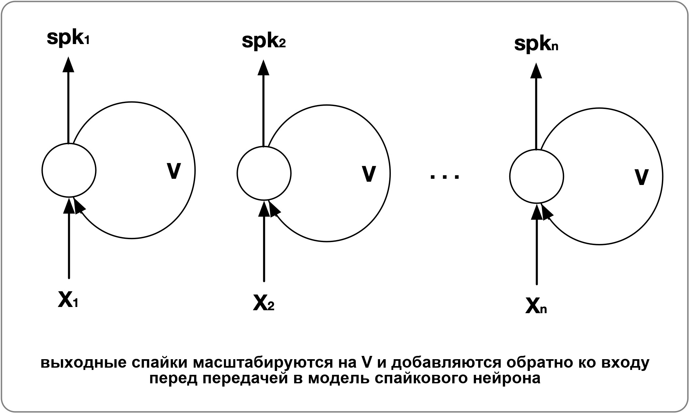
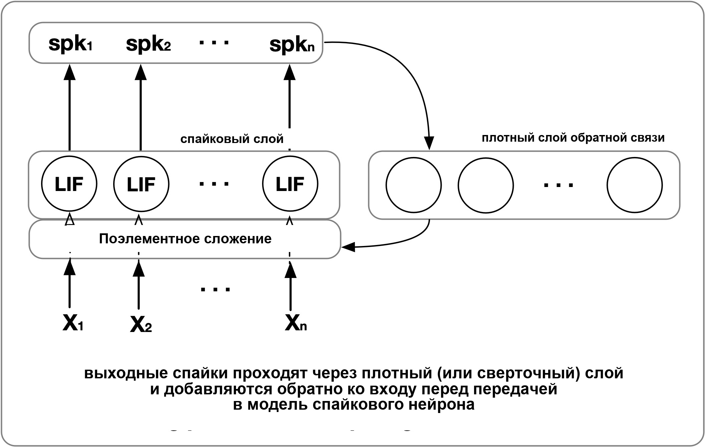

Русский перевод. Неофициальный перевод актуальной документации snnTorch latest (0.9.4). Оригинал: https://snntorch.readthedocs.io/en/latest/. Документация распространяется по лицензии CC BY-SA 3.0.
Регрессия с SNN: Часть II
Классификация на основе регрессии с рекуррентными нейронами LIF
Учебное пособие написано Александром Хенкесом (ORCID) и Джейсоном К. Эшрагианом (ncg.ucsc.edu)

Этот учебник основан на следующих статьях по нелинейной регрессии и спайковым нейронным сетям. Если вы находите эти ресурсы или код полезными в вашей работе, пожалуйста, рассмотрите возможность цитирования следующих источников:
Примечание
- Этот учебник является статической нередактируемой версией. Интерактивные редактируемые версии доступны по следующим ссылкам:
В серии учебных пособий по регрессии вы узнаете, как использовать snnTorch для выполнения регрессии с использованием различных моделей спайковых нейронов, включая:
Нейроны Leaky Integrate-and-Fire (LIF)
Рекуррентные LIF-нейроны
Спайковые LSTM
Обзор серии учебных пособий по регрессии:
Часть I обучает мембранный потенциал нейрона LIF следовать заданной траектории во времени.
Часть II (этот учебник) использует нейроны LIF с рекуррентной обратной связью для выполнения классификации с использованием функций потерь на основе регрессии
Часть III использует более сложную импульсную сеть LSTM для обучения времени срабатывания нейрона.
!pip install snntorch --quiet
# imports
import snntorch as snn
from snntorch import functional as SF
import torch
import torch.nn as nn
from torch.utils.data import DataLoader
from torchvision import datasets, transforms
import torch.nn.functional as F
import matplotlib.pyplot as plt
import numpy as np
import itertools
import tqdm
1. Классификация как регрессия
В традиционном глубоком обучении мы часто вычисляем потерю перекрестной энтропии (Cross Entropy Loss) для обучения сети классификации. Нейрон выхода с наибольшей активацией считается предсказанным классом.
В импульсных нейронных сетях (SNN) это может интерпретироваться как класс, который генерирует наибольшее количество спайков. То есть применяется перекрестная энтропия к общему числу спайков (или частоте срабатываний). В результате предсказанный класс максимизируется, а другие классы подавляются.
Мозг работает не совсем так. SNN активируются редко, и хотя подход к SNN с позиции глубокого обучения может привести к оптимальной точности, важно не 'переобучаться' слишком сильно тому, что делают специалисты по глубокому обучению. В конце концов, мы используем спайки для достижения лучшей энергоэффективности. Хорошая энергоэффективность зависит от разреженной спайковой активности.
Другими словами, обучение биомиметических SNN с помощью трюков глубокого обучения не приводит к мозгоподобной активности.
Так что же можно сделать?
Мы сосредоточимся на переформулировании задач классификации в задачи регрессии. Это делается путем обучения предсказательного нейрона генерировать заданное количество спайков, в то время как неправильные нейроны обучаются генерировать заданное количество спайков, хотя и реже.
Это отличается от перекрестной энтропии, которая стремится заставить правильный класс генерировать спайки в течение всем временных шагов, а неправильные классы — не генерировать спайки вообще.
Как и в предыдущем учебнике, мы можем использовать среднеквадратичную ошибку (MSE) для этого. Напомним форму потери среднеквадратичной ошибки:
где \(y\) является целевым значением, а \(\hat{y}\) — предсказанное значение.
Чтобы применить MSE к количеству спайков, предположим, что у нас есть \(n\) выходных нейронов в задаче классификации, где \(n\) — количество возможных классов. \(\hat{y}_i\) теперь — общее количество спайков, которые \(i^{th}\) выходной нейрон генерирует за все время симуляции.
Учитывая, что у нас есть \(n\) нейронов, это означает, что \(y\) и \(\hat{y}\) должны быть векторами с \(n\) элементами, и наша потеря будет суммировать независимые MSE-потери каждого нейрона.
1.1 Теоретический пример
Рассмотрим симуляцию из 10 временных шагов. Предположим, мы хотим, чтобы правильный класс нейронов генерировал 8 спайков, а неправильные классы — 2 спайка. Предположим, \(y_1\) — правильный класс:
Поэлементная MSE берется для генерации \(n\) компонентов потери, которые все суммируются для получения финальной потери.
2. Рекуррентные нейроны с утечкой и интеграцией и генерацией спайков (LIF)
Нейроны в мозге имеют множество обратных связей. Поэтому сообщество SNN исследует динамику сетей, которые подают выходные спайки обратно на вход. Это дополнение к рекуррентной динамике мембранного потенциала.
Существует несколько способов построения рекуррентных нейронов с утечкой и интеграцией и генерацией спайков (RLeaky) в snnTorch. Обратитесь к
документации
для исчерпывающего описания гиперпараметров нейрона. Рассмотрим несколько примеров.
2.1 Нейроны RLIF с соединениями один-к-одному
{kind=link}

Это предполагает, что каждый нейрон передает свои выходные спайки обратно на себя, и только на себя. Между нейронами в одном слое нет перекрестных связей.
beta = 0.9 # membrane potential decay rate
num_steps = 10 # 10 time steps
rlif = snn.RLeaky(beta=beta, all_to_all=False) # initialize RLeaky Neuron
spk, mem = rlif.init_rleaky() # initialize state variables
x = torch.rand(1) # generate random input
spk_recording = []
mem_recording = []
# run simulation
for step in range(num_steps):
spk, mem = rlif(x, spk, mem)
spk_recording.append(spk)
mem_recording.append(mem)
По умолчанию, V является обучаемым параметром, который инициализируется как \(1\)
и будет обновляться в процессе обучения. Если вы хотите отключить
обучение или использовать свои собственные переменные инициализации, вы можете сделать это
следующим образом:
rlif = snn.RLeaky(beta=beta, all_to_all=False, learn_recurrent=False) # disable learning of recurrent connection
rlif.V = torch.rand(1) # set this to layer size
print(f"The recurrent weight is: {rlif.V.item()}")
2.2 Нейроны RLIF с полносвязными соединениями
2.2.1 Линейная обратная связь
{kind=link}

По умолчанию, RLeaky предполагает соединения обратной связи, где все спайки
из заданного слоя сначала взвешиваются слоем обратной связи, а затем
передаются на вход всех нейронов. Это вводит больше параметров, но
считается, что это помогает в обучении временных зависимостей в данных.
beta = 0.9 # membrane potential decay rate
num_steps = 10 # 10 time steps
rlif = snn.RLeaky(beta=beta, linear_features=10) # initialize RLeaky Neuron
spk, mem = rlif.init_rleaky() # initialize state variables
x = torch.rand(10) # generate random input
spk_recording = []
mem_recording = []
# run simulation
for step in range(num_steps):
spk, mem = rlif(x, spk, mem)
spk_recording.append(spk)
mem_recording.append(mem)
Вы можете отключить обучение в слое обратной связи с помощью
learn_recurrent=False.
2.2.2 Сверточная обратная связь
Если вы используете сверточный слой, это вызовет ошибку, так как
бессмысленно проецировать выходные спайки (трехмерные) в одномерное пространство с помощью nn.Linear слоя обратной связи.
Чтобы решить эту проблему, необходимо указать, что вы используете сверточный слой обратной связи:
beta = 0.9 # membrane potential decay rate
num_steps = 10 # 10 time steps
rlif = snn.RLeaky(beta=beta, conv2d_channels=3, kernel_size=(5,5)) # initialize RLeaky Neuron
spk, mem = rlif.init_rleaky() # initialize state variables
x = torch.rand(3, 32, 32) # generate random 3D input
spk_recording = []
mem_recording = []
# run simulation
for step in range(num_steps):
spk, mem = rlif(x, spk, mem)
spk_recording.append(spk)
mem_recording.append(mem)
Чтобы размерность выходных спайков соответствовала размерности входа, автоматически применяется дополнение (padding).
Если у вас данные нестандартной формы, вам потребуется вручную создать свои собственные слои обратной связи.
3. Построение модели
Давайте обучим несколько моделей, используя RLeaky слои. Для скорости мы
обучим модель с линейной обратной связью.
class Net(torch.nn.Module):
"""Simple spiking neural network in snntorch."""
def __init__(self, timesteps, hidden, beta):
super().__init__()
self.timesteps = timesteps
self.hidden = hidden
self.beta = beta
# layer 1
self.fc1 = torch.nn.Linear(in_features=784, out_features=self.hidden)
self.rlif1 = snn.RLeaky(beta=self.beta, linear_features=self.hidden)
# layer 2
self.fc2 = torch.nn.Linear(in_features=self.hidden, out_features=10)
self.rlif2 = snn.RLeaky(beta=self.beta, linear_features=10)
def forward(self, x):
"""Forward pass for several time steps."""
# Initalize membrane potential
spk1, mem1 = self.rlif1.init_rleaky()
spk2, mem2 = self.rlif2.init_rleaky()
# Empty lists to record outputs
spk_recording = []
for step in range(self.timesteps):
spk1, mem1 = self.rlif1(self.fc1(x), spk1, mem1)
spk2, mem2 = self.rlif2(self.fc2(spk1), spk2, mem2)
spk_recording.append(spk2)
return torch.stack(spk_recording)
Создайте экземпляр сети ниже:
hidden = 128
device = torch.device("cuda") if torch.cuda.is_available() else torch.device("mps") if torch.backends.mps.is_available() else torch.device("cpu")
model = Net(timesteps=num_steps, hidden=hidden, beta=0.9).to(device)
4. Построение цикла обучения
4.1 Функция потерь среднеквадратичной ошибки в snntorch.functional
Из snntorch.functional, мы вызываем mse_count_loss чтобы установить
целевой нейрон для генерации спайков в 80% случаев, а неправильные нейроны — в 20%
случаев. То, что потребовало 10 абзацев для объяснения, достигается одной
строкой кода:
loss_function = SF.mse_count_loss(correct_rate=0.8, incorrect_rate=0.2)
4.2 DataLoader
Шаблонный код DataLoader. Давайте просто сделаем MNIST, а тестирование на временных данных оставим в качестве упражнения читателю/программисту.
batch_size = 128
data_path='/tmp/data/mnist'
# Define a transform
transform = transforms.Compose([
transforms.Resize((28, 28)),
transforms.Grayscale(),
transforms.ToTensor(),
transforms.Normalize((0,), (1,))])
mnist_train = datasets.MNIST(data_path, train=True, download=True, transform=transform)
mnist_test = datasets.MNIST(data_path, train=False, download=True, transform=transform)
# Create DataLoaders
train_loader = DataLoader(mnist_train, batch_size=batch_size, shuffle=True, drop_last=True)
test_loader = DataLoader(mnist_test, batch_size=batch_size, shuffle=True, drop_last=True)
4.3 Обучение сети
num_epochs = 5
optimizer = torch.optim.Adam(params=model.parameters(), lr=1e-3)
loss_hist = []
with tqdm.trange(num_epochs) as pbar:
for _ in pbar:
train_batch = iter(train_loader)
minibatch_counter = 0
loss_epoch = []
for feature, label in train_batch:
feature = feature.to(device)
label = label.to(device)
spk = model(feature.flatten(1)) # forward-pass
loss_val = loss_function(spk, label) # apply loss
optimizer.zero_grad() # zero out gradients
loss_val.backward() # calculate gradients
optimizer.step() # update weights
loss_hist.append(loss_val.item())
minibatch_counter += 1
avg_batch_loss = sum(loss_hist) / minibatch_counter
pbar.set_postfix(loss="%.3e" % avg_batch_loss)
5. Оценка
test_batch = iter(test_loader)
minibatch_counter = 0
loss_epoch = []
model.eval()
with torch.no_grad():
total = 0
acc = 0
for feature, label in test_batch:
feature = feature.to(device)
label = label.to(device)
spk = model(feature.flatten(1)) # forward-pass
acc += SF.accuracy_rate(spk, label) * spk.size(1)
total += spk.size(1)
print(f"The total accuracy on the test set is: {(acc/total) * 100:.2f}%")
В предыдущем руководстве мы тестировали обучение мембранного потенциала. Мы можем сделать то же самое здесь, установив целевой нейрон для достижения мембранного потенциала, превышающего порог срабатывания, а неправильные нейроны — для достижения мембранного потенциала ниже порога срабатывания:
loss_function = SF.mse_membrane_loss(on_target=1.05, off_target=0.2)
В приведенном выше случае мы пытаемся заставить правильный нейрон постоянно находиться выше порога срабатывания.
Попробуйте обновить сеть и цикл обучения, чтобы это заработало.
Подсказки:
Вам нужно будет возвращать выходной мембранный потенциал вместо спайков.
Передавайте мембранный потенциал в функцию потерь вместо спайков
Заключение
Следующее руководство по регрессии познакомит со спайковыми LSTM для достижения точного обучения времени спайков.
Если вам нравится этот проект, пожалуйста, поставьте ⭐ репозиторию на GitHub — это самый простой и лучший способ поддержать его.
Дополнительные ресурсы
Более подробную информацию о нелинейной регрессии с помощью SNNs можно найти в нашем соответствующем препринте здесь: Henkes, A.; Eshraghian, J. K.; and Wessels, H. «Spiking neural networks for nonlinear regression», arXiv preprint arXiv:2210.03515, Окт. 2022.